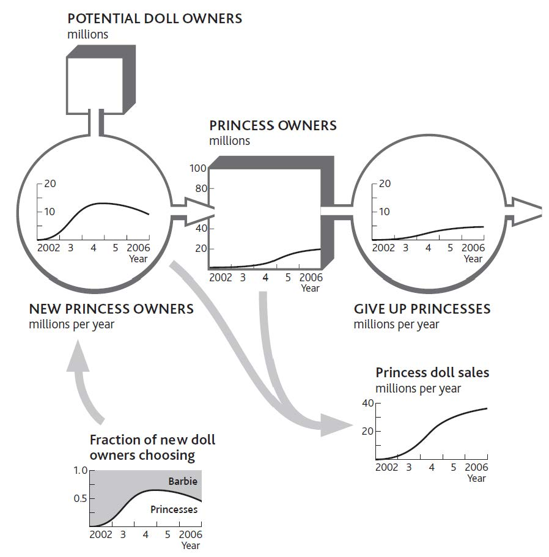
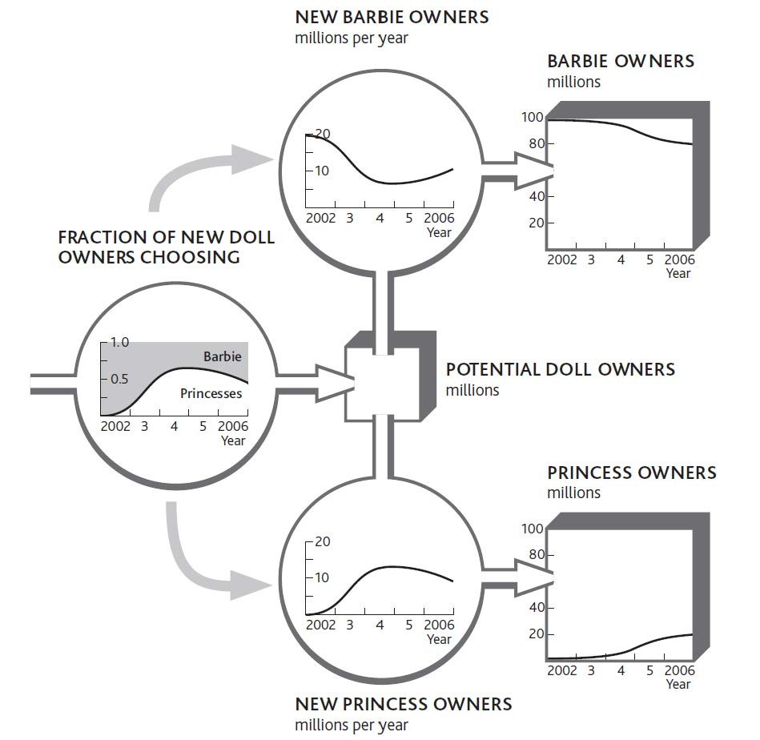
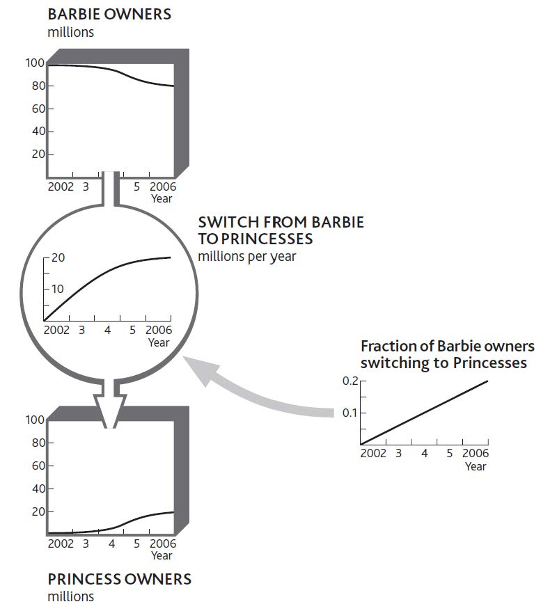
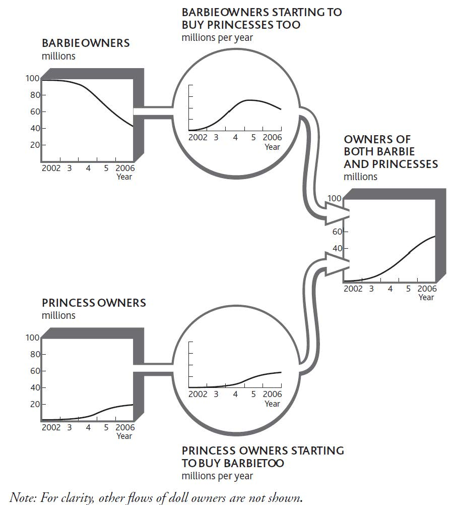

We mostly think about rivalryCompetition for the same goal, advantage, or resources. in the context of competitive markets for goods and services. Discussions of competitiveness often focus on high-level measures such as sales growth and market share. However, these are not factors over which we can have any direct effect, but are the results of success in winning, developing, and retaining important resources.
Since most of what we know about rivalry comes from studies of price- and value-based markets, it is perhaps not surprising that customer markets grab all the attention. This focus has a most unfortunate consequence: competitive strategyBusiness strategy that focuses on actively seeking change within an organization's environments. seems to have little relevance for nonprofit sectors such as public services, the voluntary sector, and nongovernmental organizations (NGOs). Yet nothing could be further from the truth; these organizations constantly compete for resources. Skilled staff are the obvious example, but supporters, cash, and other resources must also be battled for.
Nevertheless, customers are still the most obvious resource that must be won and retained against rivals, so this is where we will focus first. However, most of the principles explained here are readily applicable to rivalry for staff and some other resources as well.
There are three main forms of rivalry, which sometimes operate alone but more often play out alongside each other:
Let us see how these three mechanisms operate with a popular example.
For more than 40 years, Barbie dominated the kingdom of dolls. More than a billion Barbie dolls (including her relatives) have been sold since 1959. Mattel sells 1.5 million dolls every week in more than 140 countries. But Barbie’s undisputed reign was attacked by a new family of would-be royalty: the Disney Princesses. Snow White, Sleeping Beauty, Tinkerbell, and their friends put aside their differences in a concerted attempt to win the hearts of children ages 3 to 7. During their most spectacular period of success, sales of Princesses grew from $136 million in 2001 to $700 million in 2002. Sales of Princess dolls alone were running at 4 million per year—already a substantial incursion into Barbie’s 75 million.
So how did Barbie resist this attack on her supremacy? She had three battles to fight at once. First, she needed to keep winning the hearts of the youngest children buying a fashion doll for the first time (or persuading their parents to do so). Second, she needed to keep the loyalty of existing Barbie owners and hope they did not relegate her to the cupboard to make room for the Princesses. Third, she would have preferred not even to share space on the bedroom carpet with them.
Barbie had limited resources: only so many sales and marketing people to defend her kingdom, only so much shelf space in stores where she could reach the children she wished to make her loyal owners, and only so much cash to spend on advertising, promotion, and pricing. If she did nothing, her position would continue to be eroded as the battle went against her on all three fronts.
As new potential customers develop, rivals fight to win them for their own business. They also seek to develop this potential pool of resources. Let us take a starting position in which Barbie has some 100 million active owners. Before the invasion of the Princesses, the situation was relatively stable; say she was winning about 20 million new owners a year but losing a similar number of older girls. Doll sales come both from first-time buyers and from repeat purchases by girls who already own Barbie. There is much additional revenue from sales of accessories, so if she loses this fight for doll sales, that income will also be lost.
One scenario for this part of the Princesses’ incursion is that they quickly increase the fraction of small girls who choose them rather than Barbie as their preferred first-time fashion doll. Princess sales, too, will reflect both the rate at which first-time owners are buying these dolls and the repeat purchase rate from girls who already own one or more of the collection. If this scenario happens, the Princesses will succeed in taking a large part of Barbie’s domain without having to fight for her existing loyal owners at all (Figure 7.1 "Princesses Capture an Increasing Fraction of New Doll Owners").
Later, though, the novelty of being the first to own a Princess has faded so that new owners in 2 or 3 years’ time once again increasingly choose Barbie (Figure 7.2 "Barbie’s Loss of New Owners to the Princesses").
Figure 7.1 Princesses Capture an Increasing Fraction of New Doll Owners
The following are two points to note:
The number of Barbie’s loyal owners would therefore be reduced by the same numbers as are won by the Princesses.
The challenge for organizations that are developing potential customers is to understand what is driving customers’ choice of which “pipe” to flow through. Their choices will be driven by competitors’ decisions and actions, especially
Figure 7.2 Barbie’s Loss of New Owners to the Princesses
To these can be added further mechanisms, such as word of mouth driving reinforcing growth—here, Princess owners encouraging their friends to buy Princesses too—and availability of Princesses in stores.
Competitors battle to steal resources that have already been developed and are controlled by their rivals at the same time as they fight to prevent their own resources from being lured away. The rate at which customers choose to leave one firm for another reflects the comparison of price and benefits (value for money) between the rivals. This flow of customers between competing suppliers may, however, be moderated by switching costs.
Barbie’s predicament would be still worse if, as well as losing out in the battle for new doll owners, she found that her existing owners started deserting her too. Again, we do not know how this trend might develop, but one scenario is that the fraction leaving her rises steadily through time (Figure 7.3 "A Rising Fraction of Barbie Owners Switches to Princesses").
Notice that the number of children switching per year stops growing in spite of the rising fraction who do so, simply because there are fewer left to be lost! Indeed, if we continued this scenario, the switching rate would drop to zero as the pool of former Barbie owners empties. We could speculate on all kinds of other scenarios. Barbie could, for example, see a rapid early loss as the least loyal Barbie owners switch, followed by a slowdown as only her most loyal subjects remain. The exact story behind the battle makes a big difference to how both Barbie and the Princesses should react.
Figure 7.3 A Rising Fraction of Barbie Owners Switches to Princesses
Type 2 rivalry has certain features that can be understood only by tracking and understanding what is driving these switch rates. First, switching accelerates as the customer benefits move further ahead of the cost of switching. Like the take-up costs for first-time doll owners, the switching costs involved if Barbie’s existing owners abandon her and take up with the Princesses instead, are probably small. However, the quantity of Barbie dolls and accessories already in the toy cupboard may impose storage challenges, as well as inducing parental resistance to switching! In other cases, switching costs can be considerable. Owners of game consoles accumulate expensive libraries of game titles, plus networks of friends with whom they share enthusiasm for their particular platform. Persuading these consumers to switch is much tougher.
Many markets feature a group of hard-to-persuade customers who fail to move despite strong inducements, either because of emotional reasons, such as loyalty or comfort, or because of simple inertia. The deregulation of utility markets was supposed to encourage the mass migration of customers from inefficient incumbent suppliers to the many new entrants who would offer competitive prices. In practice, many customers failed to switch in spite of the prospect of considerable savings.
Type 2 rivalry increases in importance as markets develop. Firms are fighting to pull customers out of their rivals’ resource systems and into their own, so the more customers are in that state (rather than in an undeveloped potential pool), the more intense Type 2 rivalry becomes. Customers benefit from a range of incentives to stay or join, which is why regulatory competition policies focus so strongly on eliminating switching costs.
As with the race to develop potential customers, it is often necessary to understand customer switching between multiple competitors. This can be achieved by grouping competitors and tracking the few most likely to attack your firm or most vulnerable to attack from you.
It is surprisingly rare for firms to have good competitive intelligence on customer migration behavior, even when the information is readily to hand. Moreover, few firms make explicit choices about which rivals to defend against and which to attack. Instead, the external competitive environment is generally treated as a uniform whole, to and from which customers are won and lost in an indiscriminate manner.
This will not do! The following are questions to ask:
In Type 1 and Type 2 rivalry, we have assumed that all customers purchase exclusively from one firm or another. This is true only in certain markets. Mobile phone subscribers hardly ever use two services, for example, and most households purchase electricity from a single supplier.
In many markets, however, customers tend to allocate buying between two or more suppliers. In these cases, rivals are fighting for a larger share of sales to customers who purchase from several suppliers. Since these customers already buy from more than one source, the cost of switching for any single buying decision is generally low. Share of sales can therefore swing quickly between rivals. One market where competition for sales to shared customers takes place is fast-moving consumer goods such as food and drink. Let us see how Type 3 rivalry could affect the battle between Barbie and the Princesses.
We start with the rather obvious point that customers probably only become owners of both rivals’ products if they first own one or the other. It is unlikely (but not impossible) that a small child will buy, or be given, her first Barbie and her first Princess on the same occasion. This means that the stock of shared owners fills up from Barbie owners getting their first Princess, plus Princess owners getting their first Barbie (Figure 7.4 "Owners of Barbie or Princesses Become Owners of Both"). One reason for this latter process to be more evident than the former is that Barbie appeals to a rather older age group than Princesses.
This new pool of shared owners could be helpful or harmful to Barbie in her fight for sales. The Princess owners who buy Barbie for the first time may prefer playing with Barbie and her friends and may even end up putting their Princesses away completely. Equally, the opposite could happen. Barbie’s loyal owners who buy their first Princess get to enjoy this new toy and start buying more of them, perhaps giving up Barbie entirely.
Figure 7.4 Owners of Barbie or Princesses Become Owners of Both
This new mechanism changes our view of the Type 2 rivalry described in Figure 7.3 "A Rising Fraction of Barbie Owners Switches to Princesses". That picture implied that children will abandon Barbie on the same day they take up with the Princesses and vice versa. Possible though that is, it is more likely that the switch from dedicated Barbie owner to dedicated Princess owner will happen gradually, through a period of being an active owner of both.
This new pool of shared owners complicates matters when we try to understand Barbie’s sales rate. She now enjoys sales from four distinct sources (Figure 7.5 "Sources of Barbie Sales When Children May Own Both Types of Dolls"):